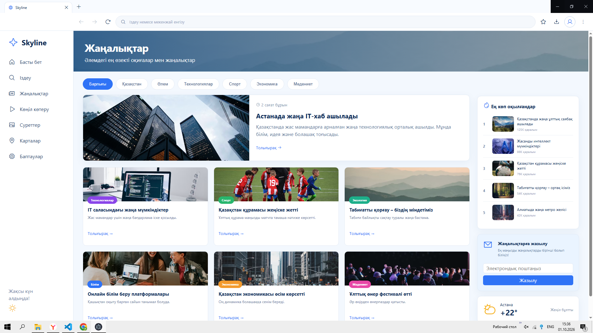

Постоянная панель
Быстрый доступ к поиску, новостям, картам и любимым сервисам.
Современный браузер с удобными вкладками, быстрым поиском и спокойным интерфейсом без лишнего шума.
Версия 0.1.0 · Windows x64 · 106 МБ
Skyline сохраняет привычные функции браузера и делает ежедневную работу с интернетом спокойнее.
Быстрый доступ к поиску, новостям, картам и любимым сервисам.
Открывайте несколько сайтов и легко переключайтесь между задачами.
Введите запрос или адрес сайта в одну понятную строку.
Изоляция страниц и ограниченные разрешения помогают защищать сеанс.
Первая публичная версия для 64-разрядных Windows 10 и Windows 11. Установщик пока не подписан цифровым сертификатом.
Нет. Для скачивания первой версии аккаунт не потребуется.
Для входа в аккаунт, синхронизации закладок и настроек между устройствами. Для сайта загрузки он не нужен.
Первый публичный установщик планируется для 64-разрядных Windows 10 и Windows 11.